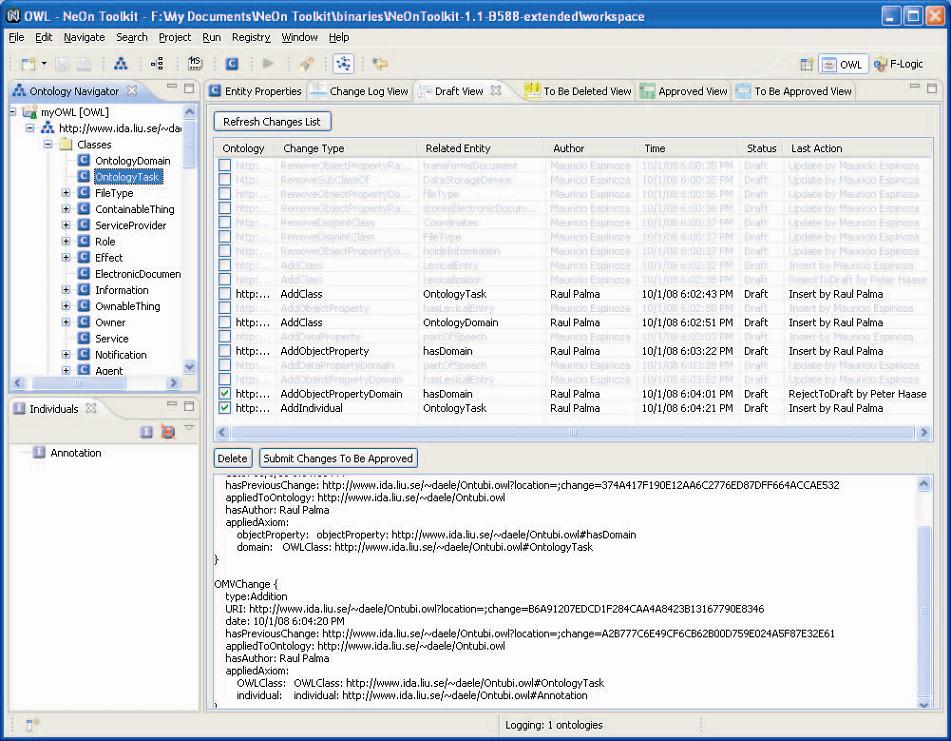

User Document
Workflow Support:
Before you follow the steps below, please make sure you have started registry by following the steps in NeOn Toolkit: Registry --> Start registry, or you could simply click on the button with some blue dots in the tool bar of NeOn Toolkit.
1. The four views in this plugin can be found by following these steps: Window --> Show View --> Other --> Workflow.
2. Please log on first in the preference page which have been introduced above and choose an OWL ontology to be tracked by right-clicking an OWL ontology in Ontology Navigator in NeOn Toolkit and then select "Log changes". We will introduce the four views according to the role you have registered.
3. If you are a viewer, you have no right to make some changes. But you could browse all the changes in different states (by clicking on the button of "Refresh Changes List") which are made by the subject experts or validated by the validators. All the changes are shown in grey.
4. If you are a subject expert, you could make some changes for an OWL ontology in the Ontology Navigator in NeOn Toolkit. In the Draft view, you could manipulate these changes by submitting some changes to be approved or deleting the changes. See Figure 2 as an example. Please note that you can not manage the changes made by other users which are shown in grey.

Figure 2. Draft view.
5. If you are a validator, you are able to manipulate To Be Approved View, To Be Deleted View and Approved View.
Specifically, (1) in To Be Approved View, a validator can decide to accept the changes by changing the change status from "to be approved" to "Approved" or reject them by changing the status to "draft". (2) In Approved View, the validator can reject the proposes by changing the status from "approved" to "to be approved" or propose to delete by changing the status from "approved" to "to be deleted". (3) Finally, in To Be Deleted View, the validator can delete the changes in "to be deleted" status permanently or reject the proposals by changing the status from "to be deleted" to "approved".